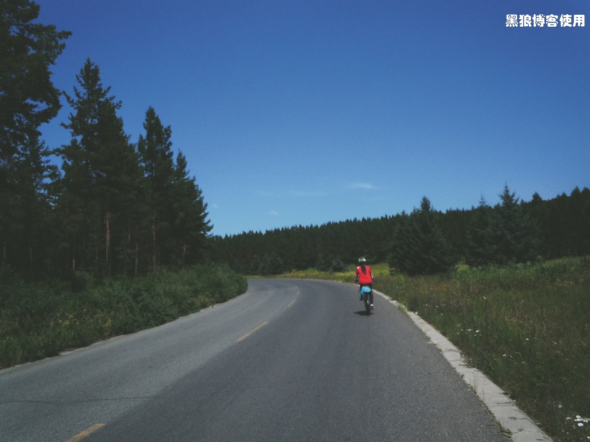
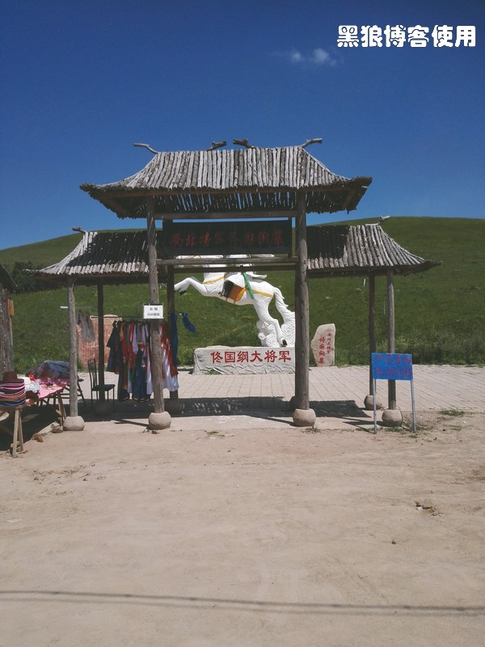
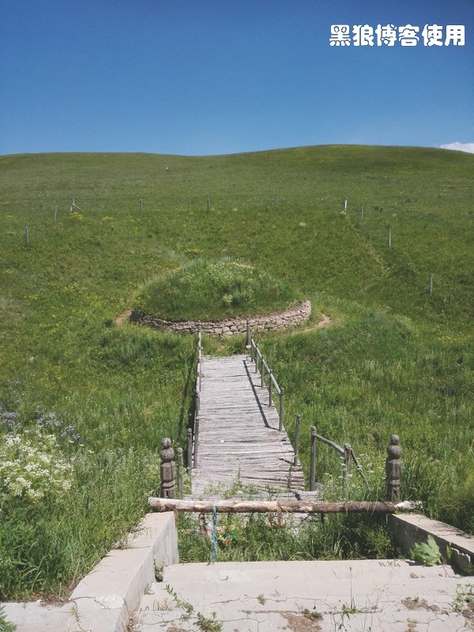

骑向乌兰布统（第九天，乌兰布统）
黑狼语录：
—— 到达了终点后才发现，那已经并不重要了。
胡有理脱离队伍回北京后，照相师、洗衣工的工作就没人承担了，方玉只顾着关注各种虫子，我只顾着和方玉不停地说话，口干舌燥地说话。骑行中，其实我还有一个想法，就是每天要达到一定的运动量，这个尺度不好把握，尤其是想了解一个将近13 岁的小学生的身体状态，需要旁敲侧击，需要大量的语言沟通，所以，昨晚住到宾馆后，我都不想说话了。
昨天，方玉睡到深夜又把我吵醒，问我她的床上有没有虫子。“没有虫子，快睡吧！”我随口应道。
今天是 8 月 3 日，骑行乌兰布统的第九天。碧空如洗，万里无云。
离目的地只有 17 公里了，接下来的路程，再怎么想象，也应该是很轻松愉快的了。
这边晚上睡觉很冷，盖着厚被子，一觉睡到自然醒，到机械林场唯一的银行取了些现金，直接吃午饭，出发的时候快到 12 点了，出发，奔向终点。
12:20 骑行了 5 公里，今天的路很平坦。方玉看见虫子的尖叫声一直在响起。
约 12:40 穿过了河北省的塞罕坝国家森林公园景区，到达了内蒙古的乌兰布统风景区。两个景区的大门相距几百米，之间有很多商铺，门口挂着“狼牙，现场拔牙”的牌子。我和方玉直接骑着自行车进入了乌兰布统，居然不需要买票，也不需要验票，据说门票是外地人每人 120 元。
13:10 路边的佟国纲大将军墓。
方玉问我这个墓地有多久了，为何保留的还这么完好，里面真的埋着人吗？我说这些问题我一个也回答不上。
13:12 方玉看见一些蒙古包，她不想走了，要住进去，但是，当她看见蒙古包驻扎在草地中，她又放弃了，她觉得肯定会有很多的虫子。
13:30 方玉刚看到路上有两只死去的蝗虫，顿时浑身无力，手发抖，骑不动自行车了。她问我能否弄点杀虫剂在草中喷一喷。
13:35 方玉站在那儿不想走了，她又看到了一只死去的蝗虫，手抖得厉害，心跳得发慌，她想扔下自行车，只想跟着我并排一起走。我让她在前面走，她说怕路上的蝗虫，我让她在后面走，她说怕蝗虫飞到她的身上。
一段约一公里的路，足足走了快一个小时。路上，方玉每隔一分钟就让我摸一下她的头发、后背、肩膀，来确认身上没有落上虫子，尤其是蝗虫。她觉得身上很痒，经常扭动着身子，她两只眼睛紧紧盯着地上，寻找着她最害怕的虫子，她在不停地大叫，她说她受不了了，她问我蝗虫为何都是死的，她说她现在觉得苍蝇都是很可爱的了。
昨天她还说喜欢睡在蒙古包里面的感觉，今天却只想睡在高高的楼上，虫子飞不上去的楼上。
终于在 14:00 左右的时候，到达了乌兰布统，今天不是周末，很快就住进了一家新开的宾馆。
本打算下午就到草原去看看，只是方玉现在对去大草原游玩已经没有任何兴趣了，她怕虫子，只想待在房间里面看电视节目，在我不停地劝说下，她同意明天去骑骑马。其实，在我看来，虫子并不多。
下午 18:00 在乌兰布统的小镇上散步，镇子很小。转了一会儿，方玉拉着我去喝咖啡，一个开在小超市角落的咖啡厅，那可能是镇子上唯一的咖啡厅了。
尽管方玉很喜欢静静地喝咖啡的情调，但是我饿着肚子喝咖啡的感觉并不是很美妙。
接下来将在这个镇子上呆上几天，放松心情，放松身体，体会大草原，体会大自然。
乌兰布统的骑行走到了终点，有一刹那间，我感觉到，这个终点已经并不重要了。